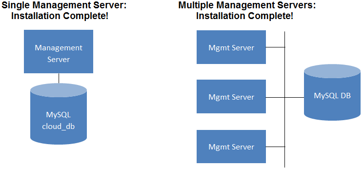

安装管理服务¶
概述¶
This section describes installing the 管理服务. There are two slightly different installation flows, depending on how many Management Server nodes will be in your cloud:
- A single 管理服务 node, with MySQL on the same node.
- Multiple 管理服务 nodes, with MySQL on a node separate from the Management Servers.
In either case, each machine must meet the system requirements described in Minimum System Requirements.
Warning
For the sake of security, be sure the public Internet can not access port 8096 or port 8250 on the 管理服务.
The procedure for installing the 管理服务 is:
- Prepare the 操作系统
- (XenServer only) Download and install vhd-util.
- Install the First 管理服务
- Install and Configure the MySQL database
- Prepare NFS Shares
- Prepare and Start Additional Management Servers (optional)
- Prepare the System VM Template
Prepare the 操作系统¶
The OS must be prepared to host the 管理服务 using the following steps. These steps must be performed on each 管理服务 node.
Log in to your OS as root.
Check for a fully qualified hostname.
hostname --fqdn
This should return a fully qualified hostname such as “management1.lab.example.org”. If it does not, edit /etc/hosts so that it does.
Make sure that the machine can reach the Internet.
ping cloudstack.apache.org
Turn on NTP for time synchronization.
提示
NTP is required to synchronize the clocks of the servers in your cloud.
Install NTP.
yum install ntp
sudo apt-get install openntpd
Repeat all of these steps on every host where the 管理服务 will be installed.
Install the 管理服务 on the First Host¶
The first step in installation, whether you are installing the 管理服务 on one host or many, is to install the software on a single node.
提示
If you are planning to install the 管理服务 on multiple nodes for high availability, do not proceed to the additional nodes yet. That step will come later.
The CloudStack Management server can be installed using either RPM or DEB packages. These packages will depend on everything you need to run the Management server.
Configure package repository¶
CloudStack is only distributed from source from the official mirrors. However, members of the CloudStack community may build convenience binaries so that users can install Apache CloudStack without needing to build from source.
If you didn’t follow the steps to build your own packages from source in the sections for “Building RPMs from Source” or “打包成 DEB” you may find pre-built DEB and RPM packages for your convenience linked from the downloads page.
提示
These repositories contain both the 管理服务 and KVM Hypervisor packages.
RPM package repository¶
There is a RPM package repository for CloudStack so you can easily install on RHEL based platforms.
If you’re using an RPM-based system, you’ll want to add the Yum repository so that you can install CloudStack with Yum.
Yum repository information is found under /etc/yum.repos.d. You’ll
see several .repo files in this directory, each one denoting a
specific repository.
To add the CloudStack repository, create
/etc/yum.repos.d/cloudstack.repo and insert the following
information.
[cloudstack] name=cloudstack baseurl=http://download.cloudstack.org/centos/$releasever/4.11/ enabled=1 gpgcheck=0
Now you should now be able to install CloudStack using Yum.
DEB package repository¶
You can add a DEB package repository to your apt sources with the following commands. Please note that only packages for Ubuntu 14.04 LTS (Trusty) and Ubuntu 16.04 (Xenial) are being built at this time. DISCLAIMER: Ubuntu 12.04 (Precise) is no longer supported.
Use your preferred editor and open (or create)
/etc/apt/sources.list.d/cloudstack.list. Add the community provided
repository to the file:
deb http://download.cloudstack.org/ubuntu trusty 4.11
We now have to add the public key to the trusted keys.
sudo wget -O - http://download.cloudstack.org/release.asc|apt-key add -
Now update your local apt cache.
sudo apt-get update
Your DEB package repository should now be configured and ready for use.
Install on CentOS/RHEL¶
yum install cloudstack-management
Install on Ubuntu¶
sudo apt-get install cloudstack-management
Downloading vhd-util¶
This procedure is required only for installations where XenServer is installed on the hypervisor hosts.
Before setting up the 管理服务, download
vhd-util from
http://download.cloudstack.org/tools/vhd-util.
and copy it into /usr/share/cloudstack-common/scripts/vm/hypervisor/xenserver
of the 管理服务.
Install the database server¶
The CloudStack management server uses a MySQL database server to store its data. When you are installing the management server on a single node, you can install the MySQL server locally. For an installation that has multiple management server nodes, we assume the MySQL database also runs on a separate node.
CloudStack has been tested with MySQL 5.1 and 5.5. These versions are included in RHEL/CentOS and Ubuntu.
Install the Database on the 管理服务 Node¶
This section describes how to install MySQL on the same machine with the 管理服务. This technique is intended for a simple deployment that has a single 管理服务 node. If you have a multi-node 管理服务 deployment, you will typically use a separate node for MySQL. See Install the Database on a Separate Node.
Install MySQL from the package repository of your distribution:
yum install mysql-server
sudo apt-get install mysql-server
Open the MySQL configuration file. The configuration file is
/etc/my.cnfor/etc/mysql/my.cnf, depending on your OS.Insert the following lines in the
[mysqld]section.You can put these lines below the datadir line. The max_connections parameter should be set to 350 multiplied by the number of Management Servers you are deploying. This example assumes one Management Server.
innodb_rollback_on_timeout=1 innodb_lock_wait_timeout=600 max_connections=350 log-bin=mysql-bin binlog-format = 'ROW'
提示
You can also create a file
/etc/mysql/conf.d/cloudstack.cnfand add these directives there. Don’t forget to add[mysqld]on the first line of the file.Start or restart MySQL to put the new configuration into effect.
On RHEL/CentOS, MySQL doesn’t automatically start after installation. Start it manually.
service mysqld start
On Ubuntu, restart MySQL.
sudo service mysql restart
(CentOS and RHEL only; not required on Ubuntu)
Warning
On RHEL and CentOS, MySQL does not set a root password by default. It is very strongly recommended that you set a root password as a security precaution.
Run the following command to secure your installation. You can answer “Y” to all questions.
mysql_secure_installationCloudStack can be blocked by security mechanisms, such as SELinux. Disable SELinux to ensure + that the Agent has all the required permissions.
Configure SELinux (RHEL and CentOS):
Check whether SELinux is installed on your machine. If not, you can skip this section.
In RHEL or CentOS, SELinux is installed and enabled by default. You can verify this with:
rpm -qa | grep selinux
Set the SELINUX variable in
/etc/selinux/configto “permissive”. This ensures that the permissive setting will be maintained after a system reboot.In RHEL or CentOS:
vi /etc/selinux/config
Change the following line
SELINUX=enforcing
to this:
SELINUX=permissive
Set SELinux to permissive starting immediately, without requiring a system reboot.
setenforce permissive
Set up the database. The following command creates the “cloud” user on the database.
cloudstack-setup-databases cloud:<dbpassword>@localhost --deploy-as=root:<password> -e <encryption_type> -m <management_server_key> -k <database_key> -i <management_server_ip>
- In dbpassword, specify the password to be assigned to the “cloud” user. You can choose to provide no password although that is not recommended.
- In deploy-as, specify the username and password of the user deploying the database. In the following command, it is assumed the root user is deploying the database and creating the “cloud” user.
- （可选） For encryption_type, use file or web to indicate the technique used to pass in the database encryption password. Default: file. See 密码和加密密钥.
- （可选） For management_server_key, substitute the default key that is used to encrypt confidential parameters in the CloudStack properties file. Default: password. It is highly recommended that you replace this with a more secure value. See 密码和加密密钥.
- （可选） For database_key, substitute the default key that is used to encrypt confidential parameters in the CloudStack database. Default: password. It is highly recommended that you replace this with a more secure value. See 密码和加密密钥.
- （可选） For management_server_ip, you may explicitly specify cluster management server node IP. If not specified, the local IP address will be used.
When this script is finished, you should see a message like “Successfully initialized the database.”
提示
If the script is unable to connect to the MySQL database, check the “localhost” loopback address in
/etc/hosts. It should be pointing to the IPv4 loopback address “127.0.0.1” and not the IPv6 loopback address::1. Alternatively, reconfigure MySQL to bind to the IPv6 loopback interface.If you are running the KVM hypervisor on the same machine with the 管理服务, edit /etc/sudoers and add the following line:
Defaults:cloud !requiretty
Now that the database is set up, you can finish configuring the OS for the 管理服务. This command will set up iptables, sudoers, and start the 管理服务.
cloudstack-setup-management
You should get the output message “CloudStack 管理服务 setup is done.” If the servlet container is Tomcat7 the argument –tomcat7 must be used.
Install the Database on a Separate Node¶
This section describes how to install MySQL on a standalone machine, separate from the 管理服务. This technique is intended for a deployment that includes several 管理服务 nodes. If you have a single-node 管理服务 deployment, you will typically use the same node for MySQL. See “Install the Database on the 管理服务 Node”.
提示
The management server doesn’t require a specific distribution for the MySQL node. You can use a distribution or 操作系统 of your choice. Using the same distribution as the management server is recommended, but not required. See “管理服务, Database, and Storage System Requirements”.
Install MySQL from the package repository from your distribution:
yum install mysql-server
sudo apt-get install mysql-server
Edit the MySQL configuration (/etc/my.cnf or /etc/mysql/my.cnf, depending on your OS) and insert the following lines in the [mysqld] section. You can put these lines below the datadir line. The max_connections parameter should be set to 350 multiplied by the number of Management Servers you are deploying. This example assumes two Management Servers.
提示
On Ubuntu, you can also create /etc/mysql/conf.d/cloudstack.cnf file and add these directives there. Don’t forget to add [mysqld] on the first line of the file.
innodb_rollback_on_timeout=1 innodb_lock_wait_timeout=600 max_connections=700 log-bin=mysql-bin binlog-format = 'ROW' bind-address = 0.0.0.0
Start or restart MySQL to put the new configuration into effect.
On RHEL/CentOS, MySQL doesn’t automatically start after installation. Start it manually.
service mysqld start
On Ubuntu, restart MySQL.
sudo service mysql restart
(CentOS and RHEL only; not required on Ubuntu)
Warning
On RHEL and CentOS, MySQL does not set a root password by default. It is very strongly recommended that you set a root password as a security precaution. Run the following command to secure your installation. You can answer “Y” to all questions except “Disallow root login remotely?”. Remote root login is required to set up the databases.
mysql_secure_installationIf a firewall is present on the system, open TCP port 3306 so external MySQL connections can be established.
On Ubuntu, UFW is the default firewall. Open the port with this command:
ufw allow mysql
On RHEL/CentOS:
Edit the /etc/sysconfig/iptables file and add the following line at the beginning of the INPUT chain.
-A INPUT -p tcp --dport 3306 -j ACCEPT
Now reload the iptables rules.
service iptables restart
Return to the root shell on your first 管理服务.
Set up the database. The following command creates the cloud user on the database.
- In dbpassword, specify the password to be assigned to the cloud user. You can choose to provide no password.
- In deploy-as, specify the username and password of the user deploying the database. In the following command, it is assumed the root user is deploying the database and creating the cloud user.
- （可选） For encryption_type, use file or web to indicate the technique used to pass in the database encryption password. Default: file. See 密码和加密密钥.
- （可选） For management_server_key, substitute the default key that is used to encrypt confidential parameters in the CloudStack properties file. Default: password. It is highly recommended that you replace this with a more secure value. See About Password and Key Encryption.
- （可选） For database_key, substitute the default key that is used to encrypt confidential parameters in the CloudStack database. Default: password. It is highly recommended that you replace this with a more secure value. See 密码和加密密钥.
- （可选） For management_server_ip, you may explicitly specify cluster management server node IP. If not specified, the local IP address will be used.
cloudstack-setup-databases cloud:<dbpassword>@<ip address mysql server> --deploy-as=root:<password> -e <encryption_type> -m <management_server_key> -k <database_key> -i <management_server_ip>
When this script is finished, you should see a message like “Successfully initialized the database.”
Now that the database is set up, you can finish configuring the OS for the 管理服务. This command will set up iptables, sudoers, and start the 管理服务.
cloudstack-setup-management
You should get the output message “CloudStack 管理服务 setup is done.”
Additional Management Servers¶
For your second and subsequent Management Servers, you will install the 管理服务 software, connect it to the database, and set up the OS for the 管理服务.
Perform the steps in “Prepare the 操作系统” and “打包成 RPM” or “打包成 DEB” as appropriate.
This step is required only for installations where XenServer is installed on the hypervisor hosts.
Download vhd-util from vhd-util
Copy vhd-util to
/usr/share/cloudstack-common/scripts/vm/hypervisor/xenserver.Ensure that necessary services are started and set to start on boot.
service rpcbind start service nfs start chkconfig nfs on chkconfig rpcbind on
Configure the database client. Note the absence of the –deploy-as argument in this case. (For more details about the arguments to this command, see Install the Database on a Separate Node.)
cloudstack-setup-databases cloud:dbpassword@dbhost -e encryption_type -m management_server_key -k database_key -i management_server_ip
Configure the OS and start the 管理服务:
cloudstack-setup-management
The 管理服务 on this node should now be running. If the servlet container is Tomcat7 the argument –tomcat7 must be used.
Repeat these steps on each additional 管理服务.
Be sure to configure a load balancer for the Management Servers. See 管理节点负载均衡
Prepare the System VM Template¶
Secondary storage must be seeded with a template that is used for CloudStack system VMs.
提示
When copying and pasting a command, be sure the command has pasted as a single line before executing. Some document viewers may introduce unwanted line breaks in copied text.
On the 管理服务, run one or more of the following
cloud-install-sys-tmpltcommands to retrieve and decompress the system VM template. Run the command for each hypervisor type that you expect end users to run in this Zone.If your secondary storage mount point is not named
/mnt/secondary, substitute your own mount point name.If you set the CloudStack database encryption type to “web” when you set up the database, you must now add the parameter
-s <management-server-secret-key>. See 密码和加密密钥.This process will require approximately 5 GB of free space on the local file system and up to 30 minutes each time it runs.
For Hyper-V
/usr/share/cloudstack-common/scripts/storage/secondary/cloud-install-sys-tmplt -m /mnt/secondary -u http://download.cloudstack.org/systemvm/4.11/systemvmtemplate-4.11.2-hyperv.vhd.zip -h hyperv -s <optional-management-server-secret-key> -F
For XenServer:
/usr/share/cloudstack-common/scripts/storage/secondary/cloud-install-sys-tmplt -m /mnt/secondary -u http://download.cloudstack.org/systemvm/4.11/systemvmtemplate-4.11.2-xen.vhd.bz2 -h xenserver -s <optional-management-server-secret-key> -F
For vSphere:
/usr/share/cloudstack-common/scripts/storage/secondary/cloud-install-sys-tmplt -m /mnt/secondary -u http://download.cloudstack.org/systemvm/4.11/systemvmtemplate-4.11.2-vmware.ova -h vmware -s <optional-management-server-secret-key> -F
For KVM:
/usr/share/cloudstack-common/scripts/storage/secondary/cloud-install-sys-tmplt -m /mnt/secondary -u systemvm-kvm-4.11.2 -h kvm -s <optional-management-server-secret-key> -F
For LXC:
/usr/share/cloudstack-common/scripts/storage/secondary/cloud-install-sys-tmplt -m /mnt/secondary -u systemvm-kvm-4.11.2 -h lxc -s <optional-management-server-secret-key> -F
For OVM3:
/usr/share/cloudstack-common/scripts/storage/secondary/cloud-install-sys-tmplt -m /mnt/secondary -u http://download.cloudstack.org/systemvm/4.11/systemvmtemplate-4.11.2-ovm.raw.bz2 -h ovm3 -s <optional-management-server-secret-key> -F
If you are using a separate NFS server, perform this step. If you are using the 管理服务 as the NFS server, you MUST NOT perform this step.
When the script has finished, unmount secondary storage and remove the created directory.
umount /mnt/secondary rmdir /mnt/secondary
Repeat these steps for each secondary storage server.
安装 Complete! Next Steps¶
Congratulations! You have now installed CloudStack 管理服务 and the database it uses to persist system data.

What should you do next?
- Even without adding any cloud infrastructure, you can run the UI to get a feel for what’s offered and how you will interact with CloudStack on an ongoing basis. See 登录 UI.
- When you’re ready, add the cloud infrastructure and try running some virtual machines on it, so you can watch how CloudStack manages the infrastructure. See Provision Your Cloud Infrastructure.